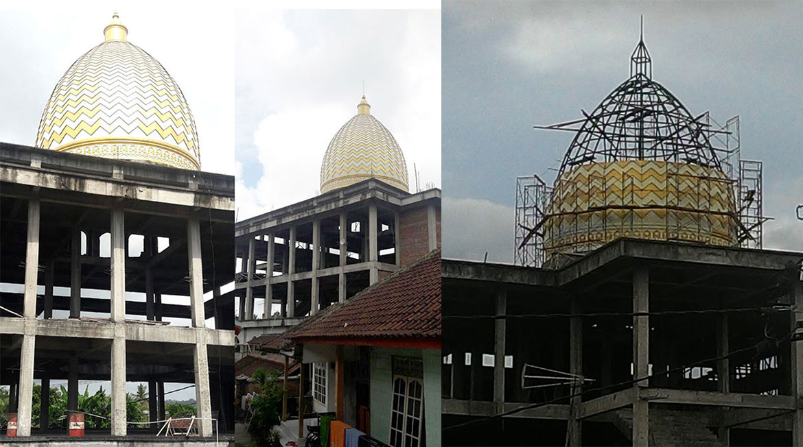

Sejarah Islam di Bali. Umat Islam di Bali tersebar di beberapa kampung muslim kuno yang menjadi cikal bakal penduduk muslim di Bali saat ini. Pengertian Kampung Muslim kuno di sini bukan berarti penduduknya mayoritas Islam tetapi minimal kampung yang pemukimnya saat awalnya daluhu ada yang dari komunitas muslim meskipun status kampungnya berbeda-beda pada saat sekarang.
Awal masuknya Islam di daerah Kabupaten Jembrana, Buleleng, Badung dan Klungkung cenderung diwarnai kedatangan orang dari Jawa, Bugis-Makassar dan Madura. Namun berbeda di Kabupaten Karangasem yang lebih dominan dengan kedatangan orang suku Sasak Lombok meskipun ada dari suku Jawa dan Bugis. Dalam bukunya “Awal Mula Muslim Di Bali” yang ditulis Drs. H. Bagenda Ali, MM menjelaskan, kedatangan Suku Sasak beragama Islam dari Lombok ke Karangasem tidak hanya pada saat Kerajaan Karangasem menguasai kerajaan Pejanggi Lombok Tengah di era Anglurah Ketut Karangaem (1691-1692). Jauh sebelum itu, saat Lombok dikuasai Kerajaan Gelgel Klungkung dan menaklukkan kerajaan Selaparang tahun 1520, di era Dalem Waturenggong yang sudah memeluk Islam.
Pada saat itu banyak orang Sasak pindah dari Lombok ke Karangasem meskipun hanya dalam jumlah terbatas tidak berkomunitas seperti kedatangannya di era pemerintahan Anglurah Ketut Karangasem. Drs. H. Bagenda Ali, MM dalam bukunya yang dicetak pertama pada Januari 2019, pada Bab V Beberapa Kampung Muslim Kuno di Bali menjelaskan, kedatangan awal orang-orang Lombok Suku Sasak Islam di Karangasem karena hubungan antara Kerajaan Gelgel Klungkung dan Kerajaan Selaparang sebagai kerajaan vassal Gelgel Klungkung. Termasuk Kerajaan Blambangan di Banyuwangi Jawa Timur yang ditaklukkan oleh Gelgel tahun 1512.
“Itulah sebabnya orang-orang Lombok dan Jawa di Bali sudah banyak yang berdatangan di daerah Klungkung dan Karangasem di era itu,” tulis Drs. H. Bagenda Ali, MM.
Bukti kedatangan orang suku Sasak Lombok beragama Islam di Karangasem menyebabkan terbentuknya kampung-kampung muslim kuno di Karangasem. Bahasa dan kesenian banyak berasal dari Lombok. Antara lain, kesenian cak kepung, rebana, Wayang Sasak, Tembang Sasak seperti cerita Menak dan hikayat nabi, kesenian Rudat dari Lombok, meskipun kesenian ini pengaruh dari Arab. Orang orang Sasak awalnya menempati tanah-tanah pelungguhan atau tanah hadiah dari puri. Selanjutnya mereka membentuk dan memperluas kampung muslim di Kabupaten Karangasem
Andre
Website yang bagus, saya tunggu perkembangannya.
Reply
Dhea
Berita yang disampaikan sangat lengkap.
Reply
Egi
Menarik untuk dibaca
Reply